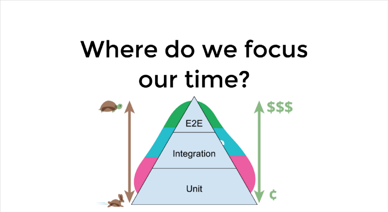

Date of publish 27.08.19
E2E Testing
What is the E2E?
End-to-end testing is where you test your whole application from start to finish. It involves assuring that all the integrated pieces of an application function and work together as expected.
End-to-end tests simulate real user scenarios, essentially testing how a real user would use the application.
What E2E tests can do?
- opening pages in a browser and searching for certain element.
- performing a set of clicks and keyboard types.
- ensuring that a user is successfully created
Why we should integrate, E2E testing in the project.
We currently write unit tests and integration tests for our code.
- specify our system
- prevent bugs and regression
- perform continuous integration
Furthermore, these tests run as frequently as possible to provide feedback and to ensure that our system remains clean.
The motivation for an additional layer of E2E tests lies in the benefits of having a fully automated test suite. These benefits include increasing developer velocity, as well as other benefits previously mentioned.
E2E tests allow us to cover sections of the application that unit tests and integration tests don’t cover. This is because unit tests and integration tests only take a small piece of the application and assess that piece in isolation.
Even if these pieces work well by themselves, you don’t necessarily know if they’ll work together as a whole. Having a suite of end-to-end tests on top of unit and integration tests allows us to test our entire application.
Our tool for integrating is "Puppeteer"

Puppeteer is a Node library which provides a high-level API to control Chrome or Chromium over the DevTools Protocol. Puppeteer runs headless by default, but can be configured to run full (non-headless) Chrome or Chromium.
Puppeteer is very useful for several task types on the web (crawling, testing, debugging, scrapping, automation..Etc)
In our case, we test all UI components with the server response.
For example: here Gif:

Some source code.
import puppeteer from 'puppeteer'
class BrowserSession {
page;
browser;
interArr = [];
interseptionEnabled = false;
async setup() {
this.browser = await puppeteer.launch({
headless: true,
slowMo: 1,
});
}
async initNewPage() {
this.page = await this.browser.newPage();
}
teardown() {
this.browser.close();
}
// Interception
async startInter(){
this.interseptionEnabled = true;
await this.page.setRequestInterception(this.interseptionEnabled);
this.page.on('request', interceptedRequest => {
if (this.interseptionEnabled) { // to avoid error "Request Interception is not enabled!"
interceptedRequest.continue();
}
});
this.page.on('response', response => {
const req = response.request();
const obj = {url:req.url(),status:response.status(),method:req.method()};
this.interArr.push(obj);
});
}
async stopInter(){
this.interseptionEnabled = false;
await this.page.setRequestInterception(this.interseptionEnabled);
}
resetInter() {
this.interArr = [];
}
}
export let bs = new BrowserSession()
import { bs } from '../../shared/BrowserSession';
import constants from '../../shared/constants';
import login from '../../utils/login';
import { URL } from '../../_e2e_vars/URL';
import { befors } from '../../functions/beforEach.e2e';
jasmine.DEFAULT_TIMEOUT_INTERVAL = 100000;
export const overview = async () => {
describe('Overview project info', () => {
befors({
goto: URL.OVERVIEW.info(),
aftEach: true
});
test('Overview project info Webcam response', async () => {
await bs.page.waitFor(constants.ASYNC_TRANSITION_TIMEOUT);
await bs.page.waitFor(constants.SECOND_PEN_BTN);
await bs.page.click(constants.SECOND_PEN_BTN);
await bs.page.waitFor(constants.ASYNC_TRANSITION_TIMEOUT);
await bs.page.waitFor(constants.WEB_CAM_URL);
await bs.page.type(constants.WEB_CAM_URL, constants.WEB_CAM_URL_VAL);
await bs.startInter();
await bs.page.waitFor(constants.SECOND_SAVE_BTN);
await bs.page.click(constants.SECOND_SAVE_BTN);
await bs.page.waitForResponse(
response =>new RegExp(/(api\/projects\/\d+\/webcam)/).test(response.url()));
await bs.stopInter();
expect(bs.interArr[0].status).toEqual(200);
},40000);
});
});
Why E2E testing is really important?
It allows developers to push code without worrying about breaking things. It enables releases with extra confidence. And, it catches errors that are missed during manual regression testing.